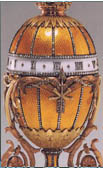
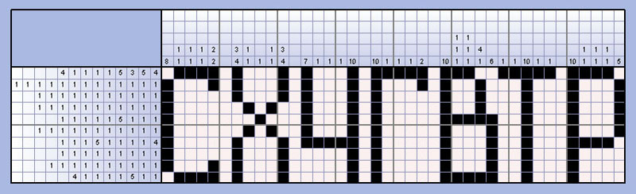
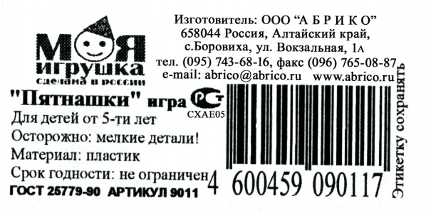
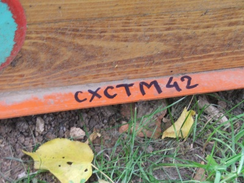
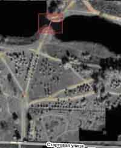
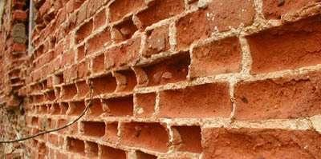
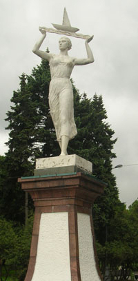
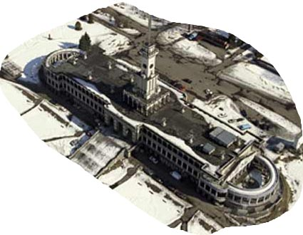

Игра №37
Тип игры: Закрытая
Описание: Авторы игры команда Йокодзуны
Принадлежности: 1. 2 автомобиля
2. Фонарик
3. Сотовый телефон
4. Доступ в Интернет
5. Цифровой фотоаппарат
6. Возможность прослушивания мр3 файлов
7. Возможность запуска флэш программ
8. Болотные сапоги или сапоги выше колен
9. Технические перчатки из толстой резины (типа марки КЩС тип 2)
10. Клизма медицинская среднего или большого размера
11. Фартук поварской белый
12. Монтировка
13. Футбольный мячик (накаченный)
14. Комплект сменной одежды ( на всякий случай)
15. Мясо + мангал и алкоголь по желанию для автопати.
| Место | Команда | Уровней пройдено | Время уровней | Всего | |
|---|---|---|---|---|---|
| Активного | Штрафы | ||||
| 1 | SpeedForce | 10 | 07:03:19 | 0 | 07:03:19 |
| 2 | СерБ и МолоД | 10 | 07:33:02 | 0 | 07:33:02 |
| 3 | НЕЗВЁЗДЫ | 10 | 07:42:36 | 0 | 07:42:36 |
| 4 | dirty | 10 | 08:01:33 | 0 | 08:01:33 |
| 5 | StalkerS | 10 | 08:20:35 | 0 | 08:20:35 |
| 6 | DudeWhereIsMyCar? | 10 | 08:25:29 | 0 | 08:25:29 |
| 7 | котики | 10 | 08:02:33 | 30:00 | 08:32:33 |
| 8 | Ктоздесь! | 10 | 09:35:27 | 0 | 09:35:27 |
| 9 | G.O.P. Style | 10 | 09:25:29 | 30:00 | 09:55:29 |
| 10 | V&S; | 10 | 09:27:53 | 30:00 | 09:57:53 |
| 11 | Самогонщики | 10 | 10:07:47 | 30:00 | 10:37:47 |
| 12 | InlineGroup | 10 | 11:09:22 | 30:00 | 11:39:22 |
| 13 | Raiders aka P.N.I. | 6 | 14:15:45 | 01:00:00 | 15:15:45 |
 график недоступен (image.php?game=37&pr=h)
график недоступен (image.php?game=37&pr=h)| 1 | 2 | 3 | 4 | 5 | 6 | 7 | 8 | 9 | 10 | ||
| 1 | котики 20:12:26 | котики 20:47:59 | НЕЗВЁЗДЫ 21:41:22 | СерБ и МолоД 23:22:46 | SpeedForce 00:02:47 | SpeedForce 00:34:27 | SpeedForce 01:10:05 | SpeedForce 02:02:20 | SpeedForce 02:57:10 | SpeedForce 03:03:19 | 1 |
| 2 | НЕЗВЁЗДЫ 20:14:21 | НЕЗВЁЗДЫ 20:48:17 | котики 21:48:24 | НЕЗВЁЗДЫ 23:27:25 | СерБ и МолоД 00:22:54 | СерБ и МолоД 00:53:19 | СерБ и МолоД 01:16:51 | СерБ и МолоД 02:08:42 | СерБ и МолоД 03:23:41 | СерБ и МолоД 03:33:02 | 2 |
| 3 | СерБ и МолоД 20:15:27 | СерБ и МолоД 20:55:37 | SpeedForce 21:54:29 | SpeedForce 23:27:30 | DudeWhereIsMyCar? 00:58:29 | НЕЗВЁЗДЫ 01:24:13 | котики 01:42:09 | НЕЗВЁЗДЫ 02:33:16 | НЕЗВЁЗДЫ 03:39:03 | НЕЗВЁЗДЫ 03:42:36 | 3 |
| 4 | G.O.P. Style 20:15:55 | Самогонщики 21:04:52 | Самогонщики 22:02:58 | котики 23:48:39 timeout. 30 мин. | НЕЗВЁЗДЫ 01:11:55 | DudeWhereIsMyCar? 01:26:03 | DudeWhereIsMyCar? 01:51:40 | котики 02:38:11 | dirty 03:50:14 | dirty 04:01:33 | 4 |
| 5 | Самогонщики 20:17:08 | Ктоздесь! 21:07:37 | dirty 22:09:53 | dirty 23:49:07 | котики 01:13:01 | котики 01:26:51 | dirty 01:52:19 | dirty 02:43:50 | котики 03:59:27 | котики 04:02:33 | 5 |
| 6 | Ктоздесь! 20:17:12 | V&S; 21:16:29 | StalkerS 22:15:34 | Ктоздесь! 23:49:39 | V&S; 01:19:26 | dirty 01:38:28 | НЕЗВЁЗДЫ 02:01:01 | StalkerS 03:04:22 | StalkerS 04:12:51 | StalkerS 04:20:35 | 6 |
| 7 | V&S; 20:17:50 | dirty 21:18:05 | СерБ и МолоД 22:18:48 | StalkerS 23:54:32 | Ктоздесь! 01:28:53 | Ктоздесь! 01:44:38 | StalkerS 02:13:14 | DudeWhereIsMyCar? 03:06:15 | DudeWhereIsMyCar? 04:16:48 | DudeWhereIsMyCar? 04:25:29 | 7 |
| 8 | InlineGroup 20:20:14 | DudeWhereIsMyCar? 21:24:48 | Ктоздесь! 22:27:25 | V&S; 00:00:42 | Самогонщики 01:29:11 | V&S; 01:44:48 | V&S; 03:09:36 | Ктоздесь! 04:09:41 | G.O.P. Style 05:23:56 | G.O.P. Style 05:25:29 | 8 |
| 9 | DudeWhereIsMyCar? 20:21:57 | StalkerS 21:27:50 | G.O.P. Style 22:44:26 | Самогонщики 00:03:24 timeout. 30 мин. | StalkerS 01:29:49 | StalkerS 01:55:10 | Ктоздесь! 03:21:39 | V&S; 04:10:55 | V&S; 05:24:49 | V&S; 05:27:53 | 9 |
| 10 | StalkerS 20:22:06 | G.O.P. Style 21:30:02 | DudeWhereIsMyCar? 22:53:45 | DudeWhereIsMyCar? 00:17:28 | dirty 01:30:30 | Самогонщики 01:55:53 | Самогонщики 03:23:46 | Самогонщики 04:30:54 | Ктоздесь! 05:31:40 | Ктоздесь! 05:35:27 | 10 |
| 11 | dirty 20:24:35 | SpeedForce 21:32:10 | V&S; 23:16:42 timeout. 30 мин. | G.O.P. Style 00:44:40 timeout. 30 мин. | G.O.P. Style 02:20:08 | G.O.P. Style 02:46:04 | G.O.P. Style 03:39:01 | G.O.P. Style 04:47:20 | Самогонщики 06:03:36 | Самогонщики 06:07:47 | 11 |
| 12 | SpeedForce 20:34:00 | InlineGroup 21:55:14 | InlineGroup 23:35:46 | Raiders aka P.N.I. 01:16:49 | Raiders aka P.N.I. 03:17:06 timeout. 30 мин. | InlineGroup 04:03:32 | InlineGroup 04:48:54 | InlineGroup 05:24:12 | InlineGroup 07:08:42 | InlineGroup 07:09:22 | 12 |
| 13 | Raiders aka P.N.I. 20:43:38 | Raiders aka P.N.I. 21:56:35 | Raiders aka P.N.I. 23:46:24 | InlineGroup 01:36:03 timeout. 30 мин. | InlineGroup 03:29:21 | Raiders aka P.N.I. 10:15:45 timeout. 30 мин. | 13 | ||||
| 1 | 2 | 3 | 4 | 5 | 6 | 7 | 8 | 9 | 10 |
Уровень 1.
| № | Команда | Старт | Завершение | Штраф | Продолжительность | Бонусы |
|---|---|---|---|---|---|---|
| 1 | котики | 19:59:58 | 20:12:26 | 12:28 | ||
| 2 | НЕЗВЁЗДЫ | 19:59:59 | 20:14:21 | 14:22 | ||
| 3 | СерБ и МолоД | 20:00:01 | 20:15:27 | 15:26 | ||
| 4 | G.O.P. Style | 20:00:06 | 20:15:55 | 15:49 | ||
| 5 | Самогонщики | 19:59:59 | 20:17:08 | 17:09 | ||
| 6 | Ктоздесь! | 20:00:00 | 20:17:12 | 17:12 | ||
| 7 | V&S; | 20:00:02 | 20:17:50 | 17:48 | ||
| 8 | InlineGroup | 20:00:01 | 20:20:14 | 20:13 | ||
| 9 | DudeWhereIsMyCar? | 20:00:04 | 20:21:57 | 21:53 | ||
| 10 | StalkerS | 20:00:03 | 20:22:06 | 22:03 | ||
| 11 | dirty | 20:00:03 | 20:24:35 | 24:32 | ||
| 12 | SpeedForce | 20:00:05 | 20:34:00 | 33:55 | ||
| 13 | Raiders aka P.N.I. | 20:00:03 | 20:43:38 | 43:35 |
Задание Полевое :
2006 год: наконец-то мы сумели изобрести машину времени и отправить нашего Исследователя в прошлое, но прошло уже несколько дней, а он не вернулся и на связь не выходит. Мы вынуждены просить помощи у вас. Пожалуйста, найдите его и верните. Везде, где он бывал, он оставлял знаки.
Первое место, куда он отправился, была площадь, где когда-то был плац-парад, а теперь сквер с фонтаном(на котором изображены некоторые жанры кино), неподалеку от которого можно увидеть великих русского драматурга и заморского философа-политолога, и даже греческого бога.
В этом месте вам необходимо, надев фартук, резиновые перчатки и взяв в руку клизму, найти Агента. Кодовой фразой для Агента будет служить фраза «Вы не подскажите, где я могу прошприцевать свою болонку?»

Ответ:
1
Уровень 2.
| № | Команда | Старт | Завершение | Штраф | Продолжительность | Бонусы |
|---|---|---|---|---|---|---|
| 1 | НЕЗВЁЗДЫ | 20:14:21 | 20:48:17 | 33:56 | ||
| 2 | котики | 20:12:26 | 20:47:59 | 35:33 | ||
| 3 | СерБ и МолоД | 20:15:27 | 20:55:37 | 40:10 | ||
| 4 | Самогонщики | 20:17:08 | 21:04:52 | 47:44 | ||
| 5 | Ктоздесь! | 20:17:12 | 21:07:37 | 50:25 | ||
| 6 | dirty | 20:24:35 | 21:18:05 | 53:30 | ||
| 7 | SpeedForce | 20:34:00 | 21:32:10 | 58:10 | ||
| 8 | V&S; | 20:17:50 | 21:16:29 | 58:39 | ||
| 9 | DudeWhereIsMyCar? | 20:21:57 | 21:24:48 | 01:02:51 | ||
| 10 | StalkerS | 20:22:06 | 21:27:50 | 01:05:44 | ||
| 11 | Raiders aka P.N.I. | 20:43:38 | 21:56:35 | 01:12:57 | ||
| 12 | G.O.P. Style | 20:15:55 | 21:30:02 | 01:14:07 | ||
| 13 | InlineGroup | 20:20:14 | 21:55:14 | 01:35:00 |
Задание Полевое :
Путешествовать по времени так хочется, а времени так мало, поэтому наш Исследователь периодически успевал побывать в двух местах практически одновременно.
1. Прослушав припев этой песни, вы сможете определить бульвар, на котором вы найдете «международную космическую станцию № 938».
(Если песня не качается, вот альтернативный адрес.)
2. Видимо, думая о том, что, делая такие вещи, г-н Фаберже добился успехов, одна из современных компаний решила позаимствовать данный символ. Один из офисов компании расположен в доме №42 корп.1. На этой стороне улицы от метро до метро растут декоративные деревья, на одном из которых написана часть кода.

Формат ответа: 1-й код + 2-й код (в любой последовательности)
Бонус уровень:
До перехода на 6 уровня схватки пришлите скриншот пройденной игры на адрес doom@cxmoscow.ru, сообщив по телефону 741-89-26
ул. Профсоюзная д.42, корп.1
Код написан на предпоследнем по счету дереве, от с. м. Профсоюзная
схстм42схае05
Задание Координаторское : 


Ответ:



Уровень 3.
| № | Команда | Старт | Завершение | Штраф | Продолжительность | Бонусы |
|---|---|---|---|---|---|---|
| 1 | SpeedForce | 21:32:10 | 21:54:29 | 22:19 | ||
| 2 | StalkerS | 21:27:50 | 22:15:34 | 47:44 | ||
| 3 | dirty | 21:18:05 | 22:09:53 | 51:48 | ||
| 4 | НЕЗВЁЗДЫ | 20:48:17 | 21:41:22 | 53:05 | ||
| 5 | Самогонщики | 21:04:52 | 22:02:58 | 58:06 | ||
| 6 | котики | 20:47:59 | 21:48:24 | 01:00:25 | ||
| 7 | G.O.P. Style | 21:30:02 | 22:44:26 | 01:14:24 | ||
| 8 | Ктоздесь! | 21:07:37 | 22:27:25 | 01:19:48 | ||
| 9 | СерБ и МолоД | 20:55:37 | 22:18:48 | 01:23:11 | ||
| 10 | DudeWhereIsMyCar? | 21:24:48 | 22:53:45 | 01:28:57 | ||
| 11 | InlineGroup | 21:55:14 | 23:35:46 | 01:40:32 | ||
| 12 | Raiders aka P.N.I. | 21:56:35 | 23:46:24 | 01:49:49 | ||
| 13 | V&S; | 21:16:29 | 23:16:42 | timeout 30 | 02:30:13 |
Задание Полевое :
Путешествуя во временном континууме нельзя не уделить хотя бы минутку искусству. Нет лучшего места для этого, чем этот дом. Такой центральный и такой – художника. Недалеко от него на набережной вас безмолвно ждут трое белых и ОН. Езжайте туда.
Формат ответа: сх + код
Задание Координаторское :
Бороздя просторы прошлого тысячелетия, обязательно загляните на концерт, посвященный извержению вулкана, на котором один великий исполнитель как всегда мастерски и проникновенно исполнил песню про прошлое.
В этом концерте принимал участие еще один исполнитель, с двумя своими старыми песнями. В состав каких альбомов вошли эти две песни?
Формат ответа: cx + альбом 1 + альбом 2 (На английском)
схreggattadeblancghostinthemachine
Уровень 4.
| № | Команда | Старт | Завершение | Штраф | Продолжительность | Бонусы |
|---|---|---|---|---|---|---|
| 1 | V&S; | 23:16:42 | 00:00:42 | 44:00 | ||
| 2 | СерБ и МолоД | 22:18:48 | 23:22:46 | 01:03:58 | ||
| 3 | Ктоздесь! | 22:27:25 | 23:49:39 | 01:22:14 | ||
| 4 | DudeWhereIsMyCar? | 22:53:45 | 00:17:28 | 01:23:43 | ||
| 5 | Raiders aka P.N.I. | 23:46:24 | 01:16:49 | 01:30:25 | ||
| 6 | SpeedForce | 21:54:29 | 23:27:30 | 01:33:01 | ||
| 7 | StalkerS | 22:15:34 | 23:54:32 | 01:38:58 | ||
| 8 | dirty | 22:09:53 | 23:49:07 | 01:39:14 | ||
| 9 | НЕЗВЁЗДЫ | 21:41:22 | 23:27:25 | 01:46:03 | ||
| 10 | G.O.P. Style | 22:44:26 | 00:44:40 | timeout 30 | 02:30:14 | |
| 11 | котики | 21:48:24 | 23:48:39 | timeout 30 | 02:30:15 | |
| 12 | InlineGroup | 23:35:46 | 01:36:03 | timeout 30 | 02:30:17 | |
| 13 | Самогонщики | 22:02:58 | 00:03:24 | timeout 30 | 02:30:26 |
Задание Полевое :
1. Наш Исследователь побывал в деревне и вез оттуда много разных вкусностей. Было уже поздно, и он решил сократить свой путь, пройдя через парк, но когда он шел по парку, его догнала группа не совсем трезвых товарищей и попыталась отобрать съестное. Проявив храбрость и смекалку, наш Исследователь успел спрятать «гостинцы». В указанном районе ищите код.

2. Решив, долго не задерживаться в этом страшном месте, он сел в машину времени и ретировался. Попав на самую высокую улицу Москвы и свернув с неё на «фруктового (ягодного) всезнайку», он доехал до села, которое в конце XIV века основал некий Иван Михайлович. Войдя через центральный вход, и неспешно прогуливаясь, наш Исследователь заметил место сражений слева от сцены, между кустов и деревьев. Осматривая их, его взгляд привлекла необычная надпись на одном из деревянных укрытий.
Формат ответа: код 1 + код 2 (в любой последовательности)
2. Парк Тропарево, заезд с улицы Академика Виноградова
2. Пэинтбольная площадка с левой стороны от входа к большой сцене, код на укреплении
схатасхавчик
Уровень 5.
| № | Команда | Старт | Завершение | Штраф | Продолжительность | Бонусы |
|---|---|---|---|---|---|---|
| 1 | SpeedForce | 23:27:30 | 00:02:47 | 35:17 | ||
| 2 | DudeWhereIsMyCar? | 00:17:28 | 00:58:29 | 41:01 | ||
| 3 | СерБ и МолоД | 23:22:46 | 00:22:54 | 01:00:08 | ||
| 4 | V&S; | 00:00:42 | 01:19:26 | 01:18:44 | ||
| 5 | котики | 23:48:39 | 01:13:01 | 01:24:22 | ||
| 6 | Самогонщики | 00:03:23 | 01:29:11 | 01:25:48 | ||
| 7 | StalkerS | 23:54:32 | 01:29:49 | 01:35:17 | ||
| 8 | G.O.P. Style | 00:44:40 | 02:20:08 | 01:35:28 | ||
| 9 | Ктоздесь! | 23:49:39 | 01:28:53 | 01:39:14 | ||
| 10 | dirty | 23:49:07 | 01:30:30 | 01:41:23 | ||
| 11 | НЕЗВЁЗДЫ | 23:27:25 | 01:11:55 | 01:44:30 | ||
| 12 | InlineGroup | 01:36:03 | 03:29:21 | 01:53:18 | ||
| 13 | Raiders aka P.N.I. | 01:16:49 | 03:17:06 | timeout 30 | 02:30:17 |
Задание Полевое :
1. Наш Исследователь устал и решил испить водицы в том месте, о котором в своих очерках писал Карамзин. Построить его приказала Екатерина II. Его строили 15 лет, а пользовались до реконструкции всего лишь 10. Название свое он берет от иностранного слова обозначающее водовод. Код ищите у воды.
2. Напившись водицы, он продолжил путешествие и попал в какое-то неизвестное место.
На улице, которую вам подскажет картинка, напротив выхода с завода, который, судя по названию, может строить машины из газа, ищите код.

Формат ответа: код 1 + код 2 (в любой последовательности)
ул. Кирпичные выемки
Завод «Газстроймаш», код на матче городского освещения.
схга37схмост1779
Уровень 6.
| № | Команда | Старт | Завершение | Штраф | Продолжительность | Бонусы |
|---|---|---|---|---|---|---|
| 1 | dirty | 01:30:30 | 01:38:28 | 07:58 | ||
| 2 | НЕЗВЁЗДЫ | 01:11:55 | 01:24:13 | 12:18 | ||
| 3 | котики | 01:13:01 | 01:26:51 | 13:50 | ||
| 4 | Ктоздесь! | 01:28:53 | 01:44:38 | 15:45 | ||
| 5 | StalkerS | 01:29:49 | 01:55:10 | 25:21 | ||
| 6 | V&S; | 01:19:26 | 01:44:48 | 25:22 | ||
| 7 | G.O.P. Style | 02:20:08 | 02:46:04 | 25:56 | ||
| 8 | Самогонщики | 01:29:11 | 01:55:53 | 26:42 | ||
| 9 | DudeWhereIsMyCar? | 00:58:29 | 01:26:03 | 27:34 | ||
| 10 | СерБ и МолоД | 00:22:54 | 00:53:19 | 30:25 | ||
| 11 | SpeedForce | 00:02:47 | 00:34:27 | 31:40 | ||
| 12 | InlineGroup | 03:29:21 | 04:03:32 | 34:11 | ||
| 13 | Raiders aka P.N.I. | 03:17:06 | 10:15:45 | timeout 30 | 07:28:39 |
Задание Полевое :
Наш Исследователь решил немного расслабиться и посидеть в тишине и покое. Он знал, что через много лет на этом месте будет сидеть совсем другой человек. Человек, который воплощал в себе Дон Кихота, Демона и Ивана Великого в одном лице.
Присев рядом с ним и наслаждаясь ароматом цветов, не забудьте посмотреть по сторонам и найти нужную вам табличку с названием организации.
Формат ответа: СХ + название организации
Задание Координаторское :
На этой картинке помимо лесного озера есть еще одно неявное изображение. Найдите его.

Формат ответа: сх+увиденное
схлицо
схдевушка
Уровень 7.
| № | Команда | Старт | Завершение | Штраф | Продолжительность | Бонусы |
|---|---|---|---|---|---|---|
| 1 | dirty | 01:38:28 | 01:52:19 | 13:51 | ||
| 2 | котики | 01:26:51 | 01:42:09 | 15:18 | ||
| 3 | StalkerS | 01:55:10 | 02:13:14 | 18:04 | ||
| 4 | СерБ и МолоД | 00:53:15 | 01:16:51 | 23:36 | ||
| 5 | DudeWhereIsMyCar? | 01:26:03 | 01:51:40 | 25:37 | ||
| 6 | SpeedForce | 00:34:27 | 01:10:05 | 35:38 | ||
| 7 | НЕЗВЁЗДЫ | 01:24:13 | 02:01:01 | 36:48 | ||
| 8 | InlineGroup | 04:03:32 | 04:48:54 | 45:22 | ||
| 9 | G.O.P. Style | 02:46:04 | 03:39:01 | 52:57 | ||
| 10 | V&S; | 01:44:48 | 03:09:36 | 01:24:48 | ||
| 11 | Самогонщики | 01:55:53 | 03:23:46 | 01:27:53 | ||
| 12 | Ктоздесь! | 01:44:38 | 03:21:39 | 01:37:01 |
Задание Полевое :
А это место вообще уникально, его успел застать наш Исследователь, но современнику в оригинальном виде оно недоступно. Но история сохранилась!
Ровно 187 лет назад этот главный архитектор Москвы лишил её света. На одноименной улице вы без труда найдете необычного размера аппарат. Воспользуйтесь атрибутом, полученным ранее.
Формат ответа: сх+код в переводе на русский язык
Задание Координаторское :
(а) (Допустим, каждую 1 секунду количество вирусов увеличивается вдвое. Путем деления из одного вируса через 300 секунд заполняется целое (полное) ведро вирусов. Через какое время в секундах из одного вируса делением заполнится ровно половина ведра вирусов?)
(б) (Если спросить у этого человека, сколько ему лет, то он ответит, что если не считать 6-го и 7-го дня недели, то ему всего 55 лет. Сколько лет ему было на самом деле?)
(в) (Определите количество чисел (натуральных трехзначных) таких, что сумма кубов входящих в них цифр, равна самому этому числу?)
Число=(а)+(б)*(в)
Формат ответа: сх+Число
Уровень 8.
| № | Команда | Старт | Завершение | Штраф | Продолжительность | Бонусы |
|---|---|---|---|---|---|---|
| 1 | НЕЗВЁЗДЫ | 02:01:01 | 02:33:16 | 32:15 | ||
| 2 | InlineGroup | 04:48:54 | 05:24:12 | 35:18 | ||
| 3 | Ктоздесь! | 03:21:39 | 04:09:41 | 48:02 | ||
| 4 | StalkerS | 02:13:14 | 03:04:22 | 51:08 | ||
| 5 | dirty | 01:52:19 | 02:43:50 | 51:31 | ||
| 6 | СерБ и МолоД | 01:16:51 | 02:08:42 | 51:51 | ||
| 7 | SpeedForce | 01:10:05 | 02:02:20 | 52:15 | ||
| 8 | котики | 01:42:09 | 02:38:11 | 56:02 | ||
| 9 | V&S; | 03:09:36 | 04:10:55 | 01:01:19 | ||
| 10 | Самогонщики | 03:23:46 | 04:30:54 | 01:07:08 | ||
| 11 | G.O.P. Style | 03:39:01 | 04:47:20 | 01:08:19 | ||
| 12 | DudeWhereIsMyCar? | 01:51:40 | 03:06:15 | 01:14:35 |
Задание Полевое :
А как же без красивых мест Москвы? Наш Исследователь и их не оставил без внимания.
1. Она была сформирована в середине XVIII века. В настоящее время её разделили надвое. С одной стороны институт по изучению взаимоотношений паразитов и их хозяев, с другой стороны еще один институт, где до недавнего времени работал ядерный реактор. Между главными входами находится «монохромный друг», недалеко от которого ищите код.
2. Это место не менее красивое. У самой дороги можно увидеть красивую девушку.
Следуя туда, откуда пришла эта девушка,

вы непременно попадете к зданию, изображенному ниже. Ищите там, куда медведи приходят на водопой!

Формат ответа: код 1 + код 2 (в любой последовательности)
Северный Речной Вокзал
Ищите фонтан
схволга1933схчер28
Уровень 9.
| № | Команда | Старт | Завершение | Штраф | Продолжительность | Бонусы |
|---|---|---|---|---|---|---|
| 1 | G.O.P. Style | 04:47:20 | 05:23:56 | 36:36 | ||
| 2 | SpeedForce | 02:02:20 | 02:57:10 | 54:50 | ||
| 3 | НЕЗВЁЗДЫ | 02:33:16 | 03:39:03 | 01:05:47 | ||
| 4 | dirty | 02:43:50 | 03:50:14 | 01:06:24 | ||
| 5 | StalkerS | 03:04:22 | 04:12:51 | 01:08:29 | ||
| 6 | DudeWhereIsMyCar? | 03:06:15 | 04:16:48 | 01:10:33 | ||
| 7 | V&S; | 04:10:55 | 05:24:49 | 01:13:54 | ||
| 8 | СерБ и МолоД | 02:08:42 | 03:23:41 | 01:14:59 | ||
| 9 | котики | 02:38:11 | 03:59:27 | 01:21:16 | ||
| 10 | Ктоздесь! | 04:09:41 | 05:31:40 | 01:21:59 | ||
| 11 | Самогонщики | 04:30:54 | 06:03:36 | 01:32:42 | ||
| 12 | InlineGroup | 05:24:12 | 07:08:42 | 01:44:30 |
Задание Полевое :
Вы почти настигли нашего Исследователя, осталось еще совсем чуть-чуть, не спешите расслабляться!
1. Этот младший родной брат одного из первых Колизеев, построенных в Москве, покоится между двумя важнейшими артериями города, одна из которых помнит "хордовых великанов", а вторая наводняется "железными монстрами", движущимися в Гиперборею по утрам и к горе, спасшей Ноя, вечером. На месте вам поможет агент, старая русская поговорка, которая говорит о неправильном использовании слюней, и инвентарь (сапоги, перчатки, монтировка).
2. Еще один код вы найдете на здании, находящемся на пересечении фамилий писателя (журналиста) и мелиоратора.
Формат ответа: код 1 + код 2
Пересечение ул. Костякова и ул. Всеволода Вишневского
Стеклянный магазин
Уровень 10.
| № | Команда | Старт | Завершение | Штраф | Продолжительность | Бонусы |
|---|---|---|---|---|---|---|
| 1 | InlineGroup | 07:08:42 | 07:09:22 | 00:40 | ||
| 2 | G.O.P. Style | 05:23:56 | 05:25:29 | 01:33 | ||
| 3 | V&S; | 05:24:49 | 05:27:53 | 03:04 | ||
| 4 | котики | 03:59:27 | 04:02:33 | 03:06 | ||
| 5 | НЕЗВЁЗДЫ | 03:39:03 | 03:42:36 | 03:33 | ||
| 6 | Ктоздесь! | 05:31:40 | 05:35:27 | 03:47 | ||
| 7 | Самогонщики | 06:03:36 | 06:07:47 | 04:11 | ||
| 8 | SpeedForce | 02:57:10 | 03:03:19 | 06:09 | ||
| 9 | StalkerS | 04:12:51 | 04:20:35 | 07:44 | ||
| 10 | DudeWhereIsMyCar? | 04:16:48 | 04:25:29 | 08:41 | ||
| 11 | СерБ и МолоД | 03:23:41 | 03:33:02 | 09:21 | ||
| 12 | dirty | 03:50:14 | 04:01:33 | 11:19 |
Задание Полевое :
Ура вот он – снова 2006 год. Но мы все равно не можем найти нашего Исследователя. Где же он может быть? Ах да, Чемпионат мира по футболу. Вы наверняка видели футбольное поле, выполняя предпоследнее задание. Возьмите мячик и позвоните по телефону 8-916-610-29-27. Остальных игроков команды мы также ждем на этом поле.
На этом уровне подсказок не будет.
Задание Координаторское :
Известно, что существует игрок, обладающей «божественной рукой». Назовите место действия события, наградившего вышеуказанного игрока подобным артефактом.